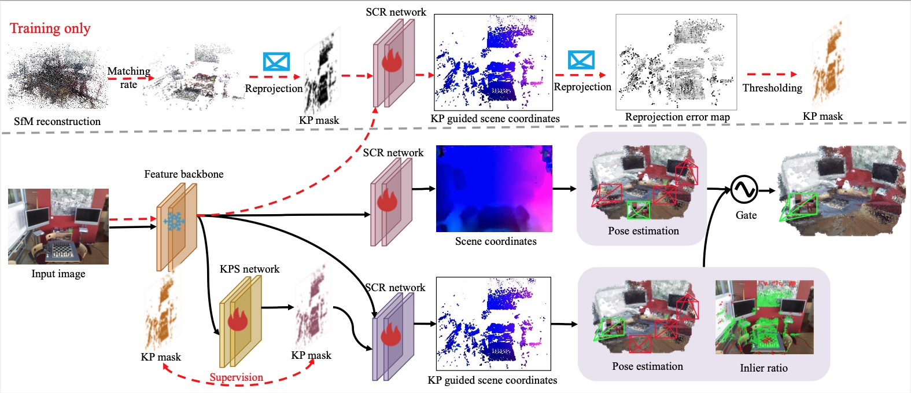

Exploring Matching Rates: From Keypoint Selection to Camera Relocalization
ACM MM 2024 (oral)
, Chengjiang Long, Yifeng Fei, Qianchen Xia, Erwei Yin, Baocai Yin, and Xin YangAbstract
Camera relocalization is a challenging task to estimate camera pose within a known scene, with wide applications in the fields of Virtual Reality (VR), Augmented Reality (AR), robotics, and etc. Most existing learning-based methods invariably utilize all the information within an image for pose estimation. Although these methods have demonstrated leading pose accuracy in some cases, they are still far from being sufficient to handle the robustness under challenging viewpoints with less impacts on the localization accuracy for viewpoints that are easier to localize. In this paper, we propose a novel two-branch camera pose estimation framework: one branch utilizes keypoint-guided partial scene coordinate regression, while the other employs full scene coordinate regression to assess the credibility of image poses, thereby enabling more accurate camera localization. In particular, we devise a keypoint selection method predicated on matching rates which is designed to measure the matching quality between a 3D keypoint and 2D keypoints across views. With these selected 3D keypoints, we can generate 2D supervision mask with the ground-truth camera pose to supervise the keypoint prediction from the keypoint selection network. Meanwhile, we further refine the 2D supervision mask through the optimization with reprojection errors on the scene co- ordinate network, which estimates the scene coordinates for points within the scene that truly warrant attention, also enhances the localization performance. We also introduce a gated camera pose estimation strategy on the two-branch pose estimation framework, employing an updated keypoint selection network for images with higher credibility and a more robust network for difficult view- points. By adopting an effective curriculum learning scheme, we achieve higher accuracy within a training span of just 20 minutes. Our method’s superior performance is validated through rigorous experimentation. The code is released at https://github.com/DUT-ICCD/KP-Guided-Reloc.
Pipeline Overview

BibTex
@inproceedings{lin2024exploring,
title={Exploring Matching Rates: From Keypoint Selection to Camera Relocalization},
author={Lin, Hu and Long, Chengjiang and Fei, Yifeng and Xia, Qianchen and Yin, Erwei and Yin, Baocai and Yang, Xin},
booktitle={ACM Multimedia 2024},
year={2024}
}
Acknowledgment
This work was supported in part by the grants from the National Natural Science Foundation of China (No. 62332019, No. 62076250), the National Key Research and Development Program of China (No. 2022ZD0210500, No. 2023YFF1203900, No. 2023YFF1203903), the Distinguished Young Scholars Funding of Dalian (No. 2022RJ01), and the Ningbo Major Research and Development Plan Project of China (No. 2023Z225). The authors would like to thank the re- viewers for their valuable comments and suggestions, which have significantly improved the quality of this manuscript.